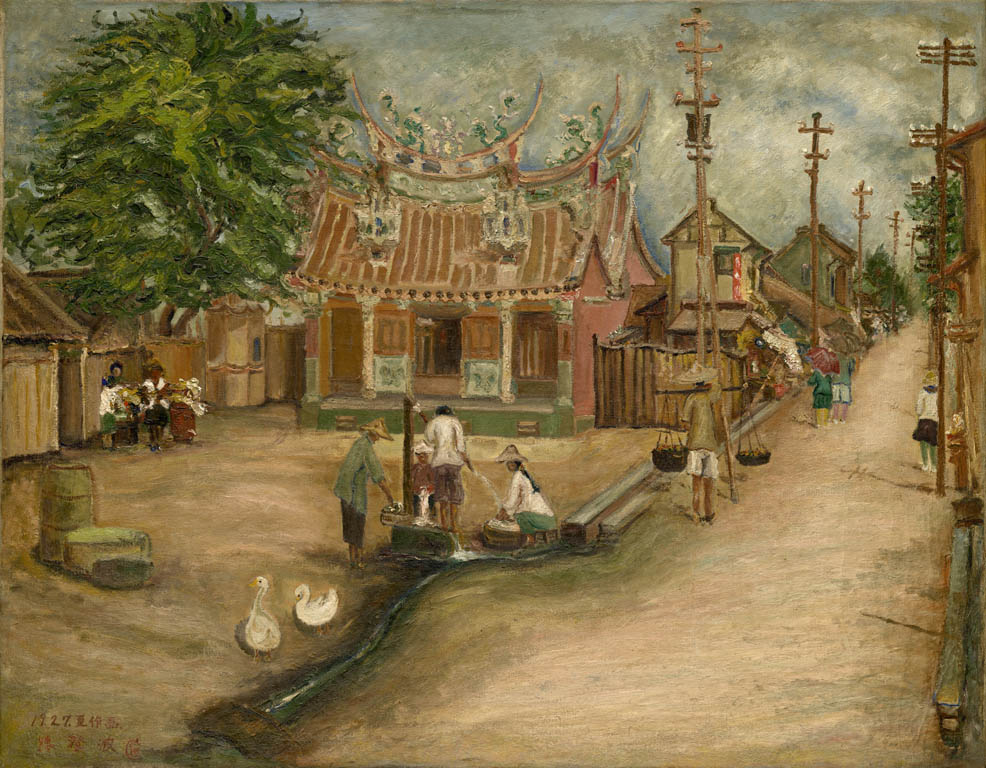
溫陵媽祖廟
Temple of Wenling Sea Goddess (Matsu)

二重橋
Nijubashi Bridge
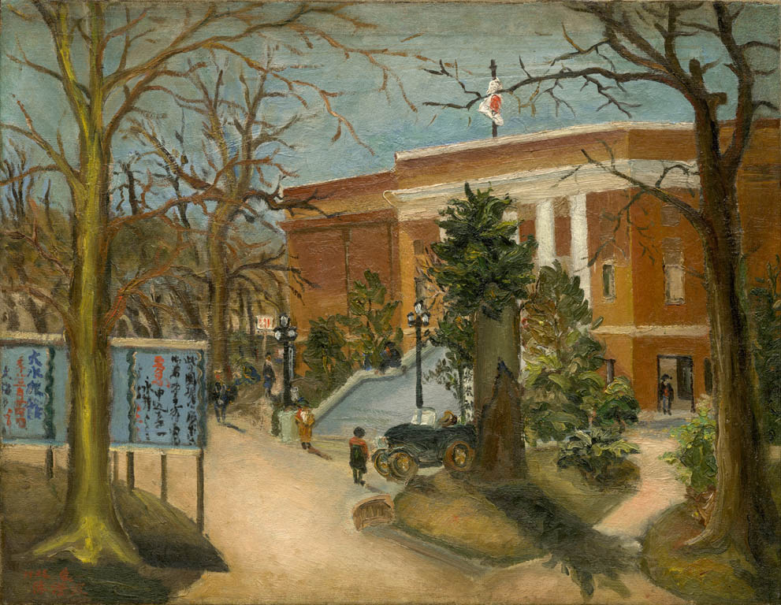
東京府美術館
Tokyo Prefectural Art Museum
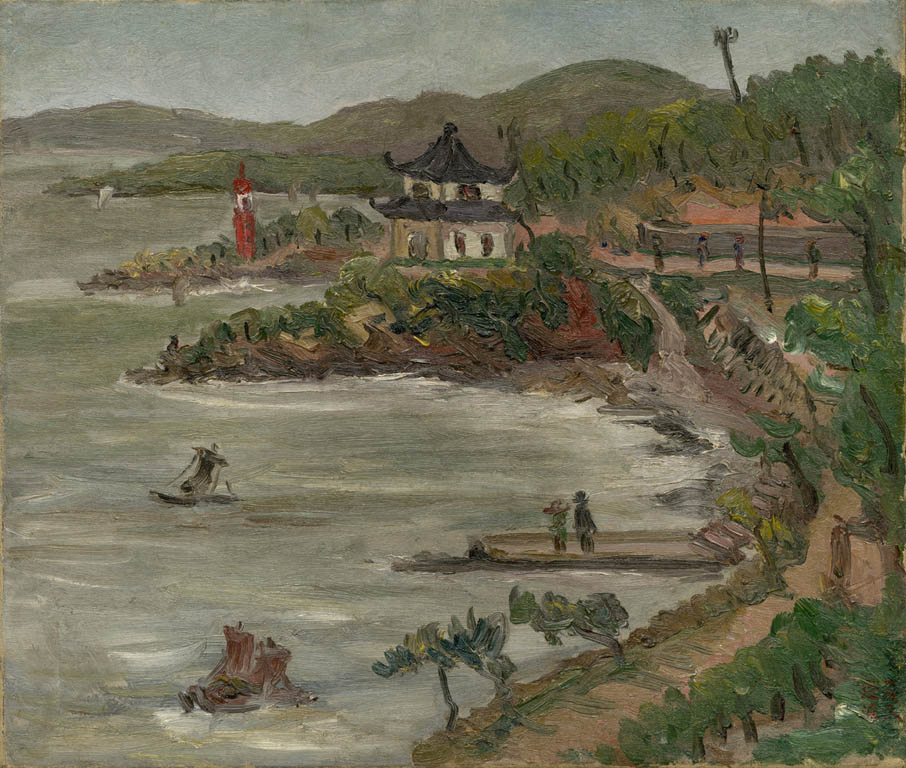
湖畔
Lakeside
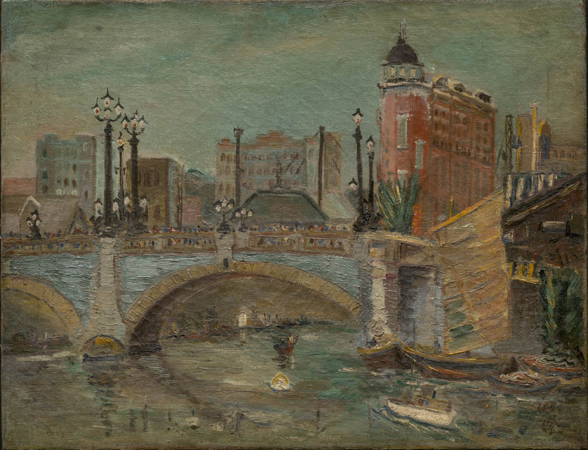
日本橋風景（一）
Nihonbashi Bridge Scene (1)
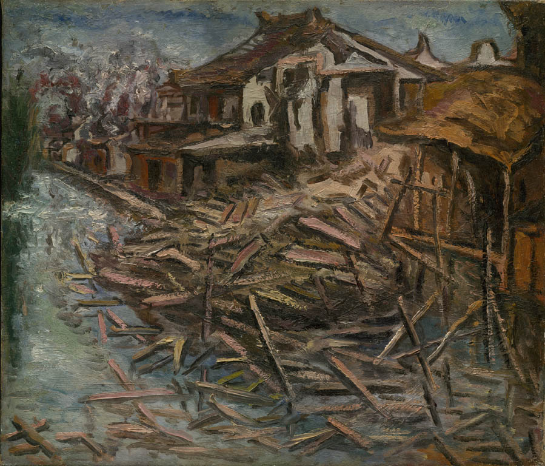
貯木場
A Lumberyard
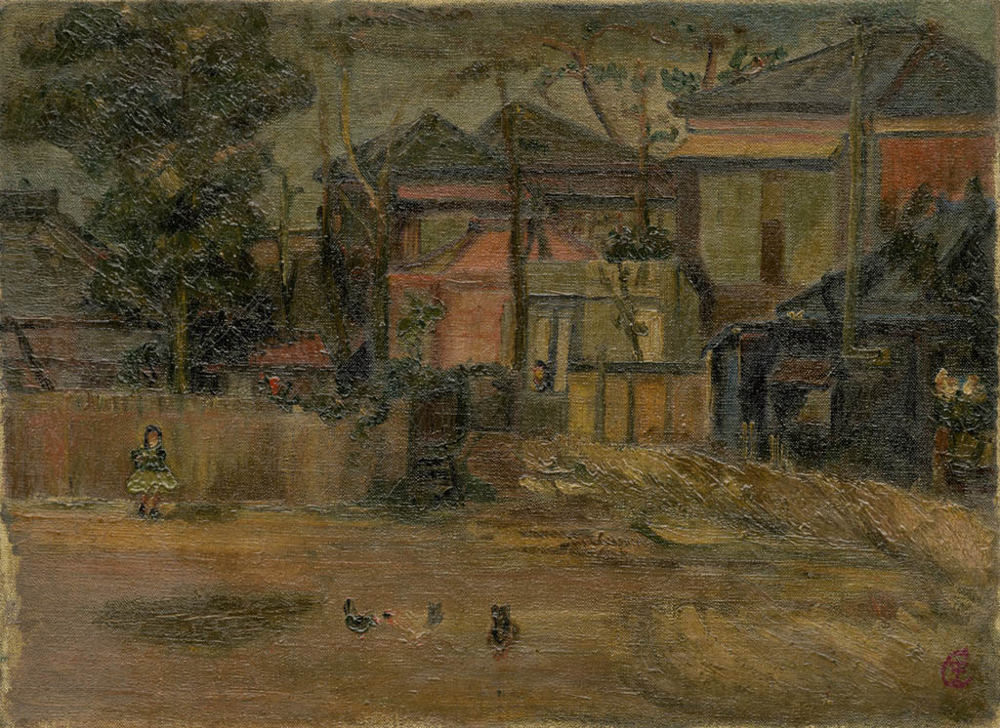
郊區風景
Rural Scene
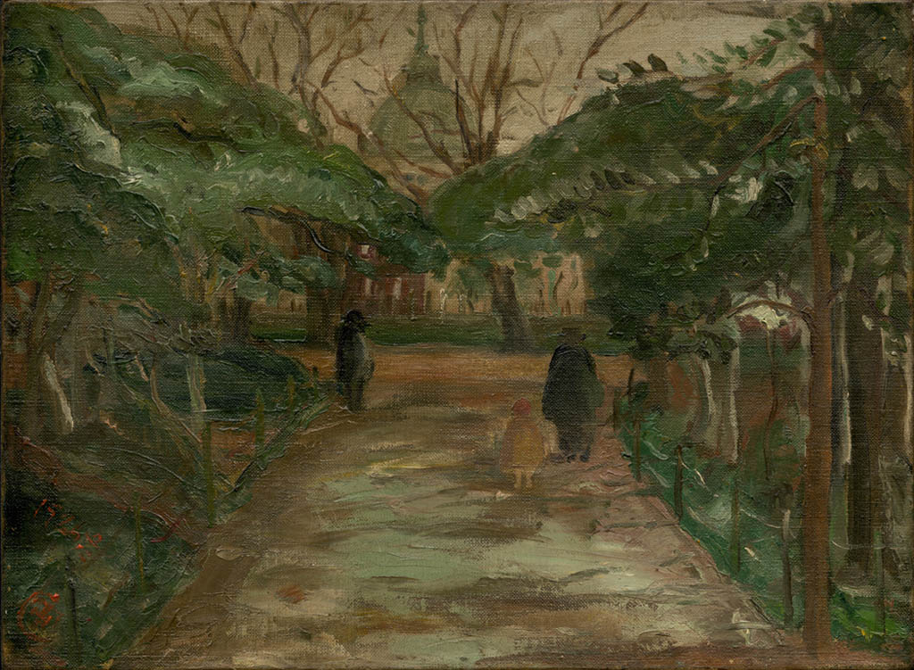
冬之博物館
Museum in Winter
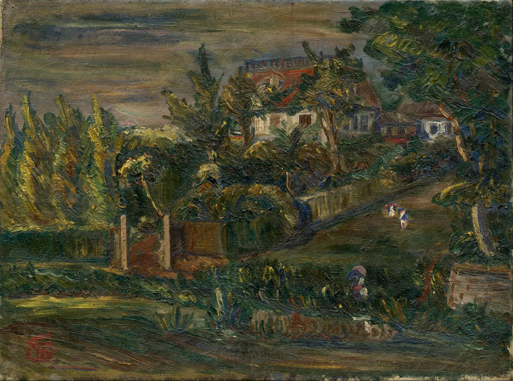
別墅
Villa
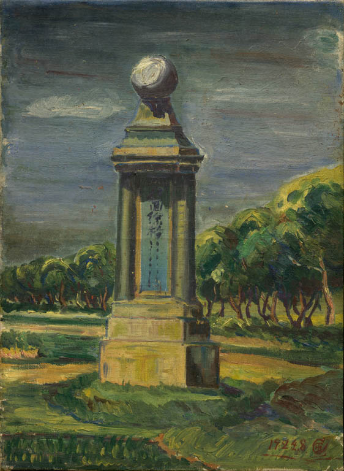
北回歸線地標
Tropic of Cancer Landmark
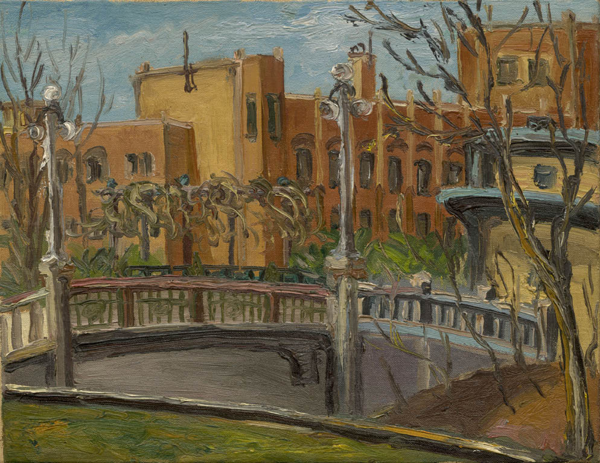
樓前橋景
Bridge View in front of a Building
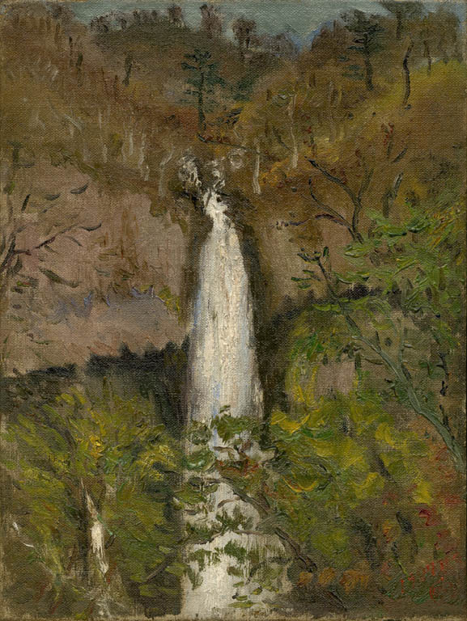
日光華嚴瀑布
Kegon Waterfall